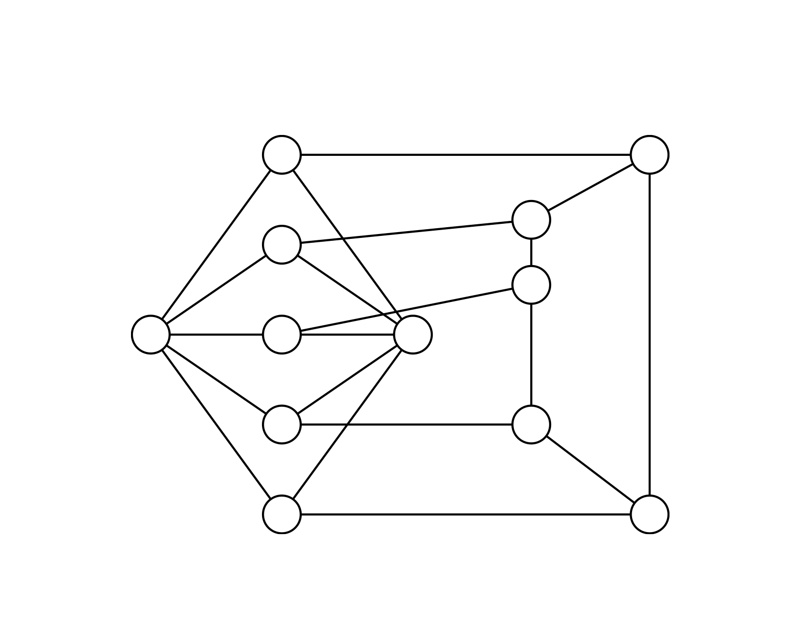
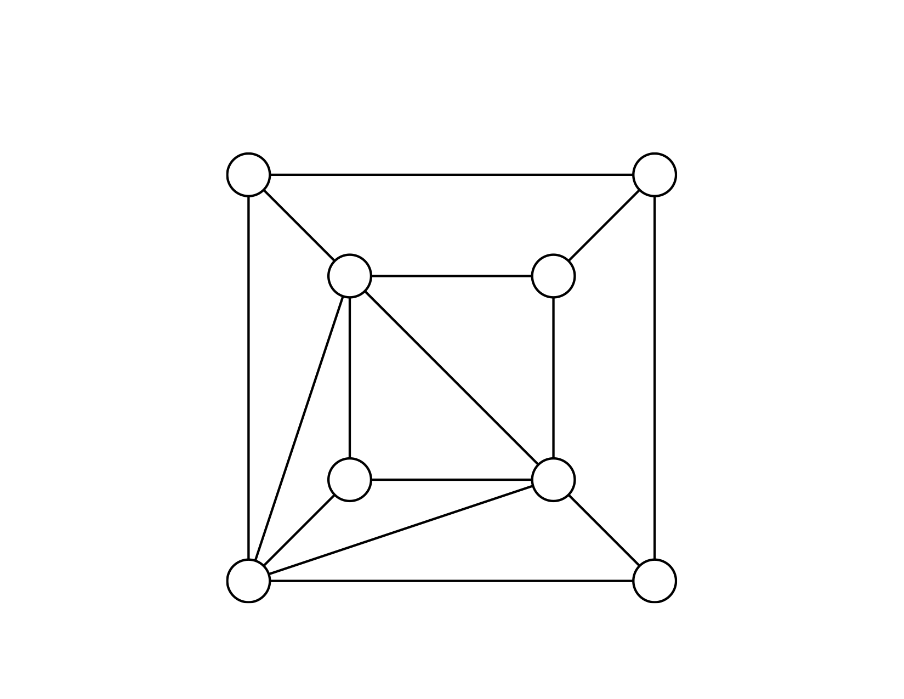
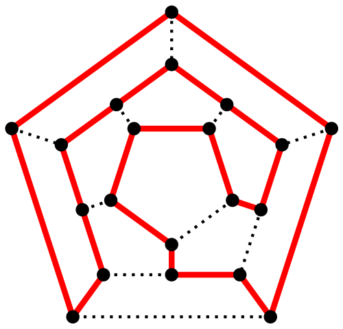
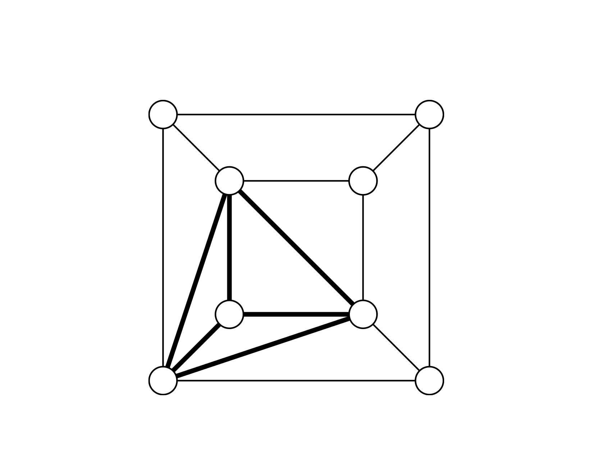

IFT-2002
Informatique Théorique
H14 - cours 11
Julien Marcil - julien.marcil@ift.ulaval.ca
Cours précédents
Machine de Turing
Définition: Une machine de Turing consiste en un 7-tuple de la forme $(S, \Sigma, \Gamma, \delta, \iota, s_{\text{accepte}}, s_{\text{rejete}})$ où
- $S$ est un ensemble fini d’états.
- $\Sigma$ est l’alphabet d'entré.
- $\Gamma$ est l’alphabet du ruban tel que $␣ \in \Gamma$ et $\Sigma \subseteq \Gamma$.
- $\delta : S \times \Gamma \to S \times \Gamma \times \{L,R\}$ est la fonction de transition.
- $\iota \in S$ est l’état initial.
- $s_{\text{accepte}} \in S$ est l’état final acceptant.
- $s_{\text{rejete}} \in S$ est l’état final rejetant et $s_{\text{accepte}} \neq s_{\text{rejete}}$
Machine de Turing
non déterministe
Définition: Une machine de Turing non déterministe consiste en un 7-tuple de la forme $(S, \Sigma, \Gamma, \delta, \iota, s_{\text{accepte}}, s_{\text{rejete}})$ où
- $S$ est un ensemble fini d’états.
- $\Sigma$ est l’alphabet d'entré.
- $\Gamma$ est l’alphabet du ruban tel que $␣ \in \Gamma$ et $\Sigma \subseteq \Gamma$.
- $\delta : S \times \Gamma \to \mathcal P(S \times \Gamma \times \{L,R\})$ est la fonction de transition.
- $\iota \in S$ est l’état initial.
- $s_{\text{accepte}} \in S$ est l’état final acceptant.
- $s_{\text{rejete}} \in S$ est l’état final rejetant et $s_{\text{accepte}} \neq s_{\text{rejete}}$
Aujourd'hui
- Complexité
- P et NP
Complexité
Temps de calcul
Soit $M$ une machine de Turing qui s’arrête sur toutes les entrées possibles.
Une definition naturelle du temps de calcul de $M$ sur le mot $w$ est le nombre de transitions avant l’arrêt de $M$.
Exemple
Définition: Le temps de calcul de $M$ est la fonction
$$ \begin{aligned} f : \mathbb N & \to \mathbb N \\ n & \mapsto \max_{\lvert w \rvert = n}\{ \text{ temps de calcul de } M \text{ sur } w \} \end{aligned} $$
On dit que $M$ fonctionne en temps $f(n)$, ou que sa complexité de temps est $f(n)$.
Classe de complexité
On défini $\mathsf{TIME}(t(n))$, la classe de complexité des langages, comme
$$ \begin{aligned} \{ L \mid & L \text{ est un language décidé par une MT } \\ & \text{en temps } O(t(n)) \} \end{aligned} $$
La classe P
La classe de complexité $\mathsf{P}$ est définie comme
$$ \bigcup_{k \ge 0} \mathsf{TIME}(n^k) $$
La classe P correspond aux langages décidables en pratique en un temps raisonnable.
Remarque
La classe P est robuste par rapport à un changement raisonnable dans le modele de calcul: les MT avec un ruban, $k$ rubans, $k$ têtes de lecture/écriture, et plusieurs autres modèles définissent la même classe de langages P.
Exemples
Voici quelques problèmes dans P
- Décider si $A + B = C$ pour $A$, $B$ et $C$ des matrices d’entiers.
- Décider si il existe un chemin entre deux sommets $s$ et $t$ dans un graphe $G$ dont le coût est moins de $c$.
- Décider si une liste $l$ est en ordre lexicographique.
- Décider si un nombre $n$ est premier.
- Décider si un graphe $G$ est coloriable avec deux couleurs, de telle sorte que deux sommets adjacents ne seront jamais de la même couleur.
Coloration de graphe
Un graphe $G$ est $k$-coloriable s’il est possible d’assigner à chaque sommet de $G$ une couleur choisie parmi $k$ couleurs données, de telle sorte qu’il n’existe aucune paire de sommets adjacents de la même couleur.
Exemple
Soit le langage $3\mathsf{-COL} = \{ \langle G \rangle \mid G \text { est un graphe } 3\text{-coloriable} \}$
Clairement $3\mathsf{-COL}$ est décidable.
Exemple
Est-ce que $3\mathsf{-COL} \in \mathsf{P}$ ?

Vérificateur
Définition: Un vérificateur polynômial pour un langage $L$ est une machine de Turing $V$ tel que pour tout $w \in \Sigma^*$:
- si $w \in L$ alors il existe un mot $c$ tel que $\langle w, c \rangle \in L(V)$
- si $w \notin L$ alors pour tout $c$ on a $\langle w, c \rangle \notin L(V)$
le temps de calcul de $V$ sur $\langle w, c \rangle$ est polynômial en la taille de $w$.
Un $c$ tel que $\langle w, c \rangle \in L(V)$ est appelé certificat ou preuve ou temoin de l’appartenance de $w$ au langage $L$.
La classe NP
La classe de complexité $\mathsf{NP}$ est l’ensemble des langages qui possèdent un vérificateur polynômial.
Classe de complexité
non déterministe
On défini $\mathsf{NTIME}(t(n))$, la classe de complexité non déterministe des langages, comme
$$ \begin{aligned} \{ L \mid & L \text{ est un language décidé par une MT } \\ & \text{non déterministe en temps } O(t(n)) \} \end{aligned} $$
Théorème
$$ \mathsf{NP} = \bigcup_{k \ge 0} \mathsf{NTIME}(n^k) $$
Exemples de langages dans NP
Voici quelques exemples de langages dans NP.
Graphe Hamiltonien
Un graphe hamiltonien est un graphe possédant au moins un cycle passant par tous les sommets une fois et une seule.

HAMGRAPH
$$\{ \langle G \rangle \mid G \text{ est un graphe hamiltonien } \}$$
$$\mathsf{HAMGRAPH} \in \mathsf{NP}$$
SUBSET-SUM
$$ \begin{aligned} \{ & \langle \{x_1, \dots, x_m\}, t \rangle \mid (x_1, \dots, x_m) \in \mathbb N^m \\ & \exists_{\{y_1, \dots,y_k\} \subseteq \{x_1, \dots, x_m\}} \sum y_i = t \} \end{aligned} $$
$$\mathsf{SUBSET-SUM} \in \mathsf{NP}$$
coNP
Remarquez que $\overline{\mathsf{HAMGRAPH}} \notin \mathsf{NP}$ et $\overline{\mathsf{SUBSET-SUM}} \notin \mathsf{NP}$.
On dit que $\overline{\mathsf{HAMGRAPH}}$ et $\overline{\mathsf{SUBSET-SUM}}$ sont dans $\mathsf{coNP}$
P vs NP
- P: les langages décidables efficacement.
- NP: les langages vérifiables efficacement.
P = NP ?
Le Clay Mathematical Institute offre un prix de un million de dollars à quiconque répondra à la question:
$$ \mathsf{P} = \mathsf{NP} $$
La classe EXPTIME
La classe de complexité $\mathsf{EXPTIME}$ est définie comme
$$ \bigcup_{k \ge 0} \mathsf{TIME}(2^{n^k}) $$
Théorème
$$ \mathsf{NP} \subseteq \mathsf{EXPTIME} $$
$$ \mathsf{coNP} \subseteq \mathsf{EXPTIME} $$
Réduction
Une réduction est un algorithme transformant un problème en un autre.
Si un problème $A$ peut être réduit à (i.e. transformé en) un problème $B$, et que le problème $A$ est difficile alors le problème $B$ est au moins aussi difficile. On écrit alors $A \le_m B$.
Réduction polynômiales
Un language $L$ se réduit au language $K$, noté $L \le_p K$ si il existe $f: \Sigma^* \to \Sigma^*$ une fonction calculable en temps polynômiales tel que
$$\forall_{w \in \Sigma^*} \quad w \in L \ \Leftrightarrow \ f(w) \in K$$
Théorème
Si $A \le_p B$ et $B \in \mathsf{P}$, alors $A \in \mathsf{P}$.
Théorème
Si $A \le_p B$ et $B \in \mathsf{NP}$, alors $A \in \mathsf{NP}$.
NP-difficile
Définition: Le langage $L$ est NP-difficile si pour tout $L' \in \mathsf{NP}$ on a $$ L' \le_p L $$
un langage NP-difficile est aussi difficile à décider, ou plus difficile, que n’importe quel langage de NP.
NP-complet
Définition: Le langage $L$ est NP-complet si
- $L \in \mathsf{NP}$
- $L$ est NP-difficile
Remaques
Soit $L$ un langage NP-complet.
- $L$ est au moins aussi difficile à décider que n’importe quel langage de NP.
- $L$ n’est pas trop difficile car il est dans NP.
Théorème
Si $L$ est un langage NP-complet et $L \in \mathsf{P}$, alors
$$\mathsf{P} = \mathsf{NP}$$
Si l’on peut résoudre un seul problème NP-complet efficacement, alors on aura résolu efficacement tous les problèmes de NP.
Corollaire
Si $A \le_p B$ et $A \in$ NP-complet et $B \in $ NP, alors $B$ est NP-complet.
Pour montrer qu'un problème $B$ est NP-complet il faut réduire un problème $A$ NP-complet à ce problème.
Théorème de Cook-Levin
$\mathsf{SAT}$ est NP-complet
SAT
$$ \begin{aligned} \mathsf{SAT} = \{⟨φ⟩\mid & φ \text{ est une expression booléenne } \\ & \text{satisfaisable} \} \end{aligned} $$
Exemple
$$φ = (\overline{x}∧y) ∨ (x∧\overline{z})$$
$$ \begin{aligned} x & = 0 \\ y & = 1 \\ z & = 0 \end{aligned} $$
Forme normale conjonctive
Un terme est soit une variable booléenne ou la négation d’une variable booléenne.
Une clause est une somme booléenne de termes.
Une expression booléenne est en forme normale conjonctive (FNC) si il s’agit d’un produit booléen de clauses.
Exemple
L’expression booleenne suivante est en FNC
$$(x_1 ∨ \overline{x_2} ∨ \overline{x_3} ∨ x_4) ∧ (x_3 ∨ \overline{x_5} ∨ x_6) ∧ (x_3 ∨ \overline{x_6})$$
3-FNC
Une expression booléenne est en 3-FNC si elle est en FNC et si chaque clause est une somme booléenne d’exactement 3 termes qui comprennent 3 variables distinctes.
Exemple
$$(x_1 ∨ \overline{x_2} ∨ \overline{x_3}) ∧ (x_3 ∨ \overline{x_5} ∨ x_6) ∧ (x_3 ∨ \overline{x_6} ∨ x_4)$$
3SAT
$$ \begin{aligned} \{⟨φ⟩\mid & φ \text{ est une expression booléenne } \\ & \text{en } 3\mathsf{-FNC} \text{ satisfaisable} \} \end{aligned} $$
Théorème
3SAT est NP-complet
Preuve
- 3SAT $\in$ NP
- SAT $\le_p$ 3SAT
Clique
Une clique d'un graphe est un sous-ensemble des sommets de ce graphe dont le sous-graphe est complet, c'est-à-dire que deux sommets quelconques de la clique sont toujours adjacents.
Exemple

CLIQUE
$$ \begin{aligned} \{ \langle G, k \rangle \mid & G \text{ est un graphe qui contient} \\ & \text{un sous-graphe complet de taille } k \} \end{aligned} $$
Théorème
CLIQUE est NP-complet
Preuve
- CLIQUE $\in$ NP
- 3SAT $\le_p$ CLIQUE
langages NP-complets
De nombreux problème ont été démontrer comme NP-complet
Complexité d’espace
Complexité d’espace
- l’espace logarithmique
- l’espace polynômial
- l’espace exponentiel
Espace logarithmique
Pour definir un espace de calcul inférieur à la taille de l’input, nous considérons que l’input réside sur un ruban en lecture seule, et qu’un autre ruban est utilisé pour faire le calcul.
Espace de calcul
Soit $M$ une machine de Turing qui s’arrête sur toutes les entrées possibles.
Une definition naturelle de l'espace de calcul de $M$ sur le mot $w$ la position la plus à droite que la tête de lecture atteint.
Espace de calcul
Définition: Le espace de calcul de $M$ est la fonction
$$ \begin{aligned} f : \mathbb N & \to \mathbb N \\ n & \mapsto \max_{\lvert w \rvert = n}\{ \text{ espace de calcul de } M \text{ sur } w \} \end{aligned} $$
Classe de complexité
On défini $\mathsf{SPACE}(t(n))$, la classe de complexité des langages, comme
$$ \begin{aligned} \{ L \mid & L \text{ est un language décidé par une MT } \\ & \text{en espace } O(t(n)) \} \end{aligned} $$
Classe de complexité
$$ \begin{aligned} L = & \mathsf{SPACE}(log n) \\ PSPACE = & \bigcup_{k \ge 0} \mathsf{SPACE}(n^k) \\ EXPSPACE = & \bigcup_{k \ge 0} \mathsf{SPACE}(2^{n^k}) \\ \end{aligned} $$
Théorème
$$\mathsf{TIME}(f(n)) \subseteq \mathsf{SPACE}(f(n))$$
Classe de complexité
non déterministe
On défini $\mathsf{NSPACE}(t(n))$, la classe de complexité des langages non déterministe, comme
$$ \begin{aligned} \{ L \mid & L \text{ est un language décidé par une MT } \\ & \text{non déterministe en espace } O(t(n)) \} \end{aligned} $$
Théorème
Soit un fonction $f$ tel que $f(n) ≥ n$
$$\mathsf{NSPACE}(f(n)) \subseteq \mathsf{SPACE}(f^2(n))$$
Corollaire
$$\mathsf{PSPACE} = \mathsf{NPSPACE}$$
Hiérarchie
P ⊆ NP ⊆ PSPACE = NPSPACE ⊆ EXPTIME
Question ouverte
PSPACE $\stackrel{?}{=}$ EXPTIME
Question ouverte
NP $\stackrel{?}{=}$ PSPACE
Zoo
PSPACE-difficile
Définition: Le langage $L$ est PSPACE-difficile si pour tout $L' \in \mathsf{PSPACE}$ on a $$ L' \le_p L $$
un langage PSPACE-difficile est aussi difficile à décider, ou plus difficile, que n’importe quel langage de PSPACE.
PSPACE-complet
Définition: Le langage $L$ est PSPACE-complet si
- $L \in \mathsf{PSPACE}$
- $L$ est PSPACE-difficile
Jeu de géographie
Soit un liste de pays: Argentine, Bolivie, Brésil, Canada, Chili, Colombie, Costa Rica, Cuba, Équateur, États-Unis, Guatemala, Haïti, Honduras, Mexique, Nicaragua, Panama, Paraguay, Pérou, République dominicaine, Salvador, Uruguay, Venezuela.
Jeux à deux joueurs: un joueur choisi un pays. L'aute joueur doit choisir un pays qui n'est pas encore été choisi tel que la première lettre du pays est la même que la dernière lettre du pays choisi précédemment. Un joueur gagne quand l'autre joueur ne peut plus nommer de pays.
Jeu de géographie
Étant donner une liste de noms: $w_1, \dots, w_n$. Exist-il une statégie gagnante pour le pour le premier joueur?

Théorème
Jeu de géographie est PSPACE-complet